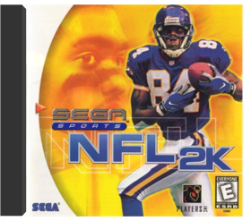
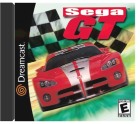
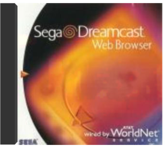

Crazy Taxi  What's so hot about Crazy Taxi? For starters, the graphics sport the most impressive re-creation of a living city ever seen in a video game. The level of detail is astounding and never ceases to surprise the player as block after unique block speeds by. The city is a distilled version of San Francisco with some landmarks and neighborhoods left intact. Making it seem all the more real are apparent product placements of real-world retail locations such as KFC, Tower Records, and Pizza Hut. And just about everything you see on the screen is interactive: boxes, phone booths, and mailboxes topple when bumped or smashed, pedestrians leap and tumble out of your path, and the myriad of traffic attempts to avoid your erratic high-speed antics. While some driving games brag about a lack of boundaries, this one delivers—players drive on the ocean floor, off the second floor of a parking garage, through parks, and down stairs. A helpful hovering arrow points drivers in the correct direction, but you can truly drive wherever you want at any time, making for tons of replay value. While the game is a direct port from the arcade game of the same name, there's plenty more depth in the home version. In addition to the city that appears in the coin-op version, the Dreamcast version also includes an entirely new city. Crazy Taxi includes a trunk-load of mini-games that help to teach drivers how to perform the special speed boosts and maneuvers in the game. Though this game would be plenty exciting without any sounds at all, it has an adrenaline-pumping soundtrack supplied by punk crossover bands the Offspring and Bad Religion, as well as some good, if sometimes monotonous, dialogue between the driver and the passengers. —Jeff Young Pros:Wonderful, realistic graphicsEasy to get into, and full of many long hours of addictive playEven more to offer than the fantastic arcade game upon which this is basedCons:On very few occasions players will encounter some graphic slowdown Expendable  You control an expendable clone soldier from a third-person perspective. The game is divided into missions, each mission having roughly the same goal: blow everything up and run to the end as fast as possible. Along the way, you fight hordes of mindless aliens, rescue hostages, and play with your choice of 18 powerful weapons. If you have an additional controller, a friend can join in the mayhem. The game saves your progress with the optional Visual Memory Unit and also makes use of the optional Jump Pack, which vibrates to indicate hits and explosions. While Expendable won't win any awards for creativity, depth, or longevity, sometimes you just want to team up with a buddy and kick alien butt. For those times, Expendable does just fine. —Michael Fehlauer Pros:Brilliant graphicsChaotic, rampaging two-player cooperative playOver-the-top weaponsCons:Mindless "run and gun" gameplayRepetitive single-player game NFL 2K  Take 2Armchair quarterbacks and wannabe coaches will love Sega's NFL 2K, unarguably one of the best-looking sports video games ever made. Realistic plays are perfectly matched with equally realistic graphics—a sharp contrast to the hyperactive arcade qualities of NFL Blitz 2000. Not only are the players more detailed and lifelike than in any other game we've played, but their smooth moves and impressive array of animations make it hard to remember you're actually playing a game and not watching one on TV. You can even see the breath of each individual player during cold-weather games.NFL 2K also features a full-league fantasy draft, a tutorial mode, extensive game and season statistics, and excellent play and player creation options. Even its play-by-play and color commentary surpass other games on the market. All 31 NFL teams are included as are most of the real players, though each team does have a few generic guys with names like "Seahawks WR." Not surprisingly, some offseason transactions are not reflected in this game—namely, the Barry Sanders situation in Detroit. But he's in this game, so fire up NFL 2K and see Barry run again. Better yet, create a custom player designed to fit your style and sign him to your favorite team's roster. NFL 2K does not make any special use of the optional Visual Memory Unit, apart from saving your game and roster data. In fact, if this game has a flaw, it's that a single saved game fills up nearly an entire VMU. So if you want to save your game info in NFL 2K but don't want to save over other saved games, you will need another VMU. If you have even a passing interest in football, this is a must-buy, since it is clearly the new standard by which all future football—and other sports—video games will be judged. —Michael Ryan Pros:Outstanding lifelike graphics and player animationsExcellent play-calling interfaceEasy to learn and play, even for novicesCons:Saved games take up too much memory on VMU Sega GT  "Sega of America, Inc."When we first popped in Sega GT, we were a bit skeptical. It doesn't just resemble the layout of Gran Turismo for the PlayStation; it's almost identical to it, from earning licenses to having your own garage and stocking it with brand-name cars. But the more we played, the more we fell in love with Sega GT's silky graphics that speed along with only the slightest blurring at night. The scenery is so distracting that most players will have to remember to keep their eyes on the road.Usually, racing games can get pretty tiring, but Sega GT will hold most players, mainly because there are so many licenses you can earn from the auto manufacturers in the game, including Mazda, Suzuki, and other mostly Japanese auto makers. One of the coolest features here allows you to create a car from scratch and then see how it stacks up on the track—chances are your first design won't do well. A little more reflection and other effects would have better integrated the cars with their surroundings, and some star-studded songs sure would have been preferable to the game's generic soundtrack. —Robb Guido Pros: Much more absorbing than the average racing gameSlick graphics will make players droolCons:Generic soundtrack Shenmue  The game itself is awash in small details, crammed into a confined space. The city of Yokusuka circa 1986 is rendered beautifully in a short series of neighborhoods that are long on detail even if short on variety. The story itself is ripped straight from a chopsocky flick: you portray the young hero Ryo Hazuki, whose father (a kung fu sensei, naturally) is killed before his very eyes by a mysterious and frightening villain. Ryo must uncover the identity of the killer and fight his way through the city in an effort to avenge this wrongful death. Shenmue's Yokusuka might be short on space—in total, it represents maybe a square mile—but the detail is overwhelming. You can interact with nearly every person or object that you see; 300 citizens go about their daily routines, and whom you encounter is as much determined by where you are as when you are there. Much of this interaction involves combat that ranges from Dragon's Lair-style reaction tests (such as timing a button press to dodge an oncoming car) to freeform kung fu fighting. Further, each second of real time equals about a minute of game time, and Ryo has to be home by 11 p.m. each evening. The game moves at a brisk pace, and each challenge or battle feels like a race against time. Some might say that gaming doesn't get shallo Soul Calibur SPIGFeaturing graphics that surpass even the amazing NFL 2K, Soul Calibur is the martial arts fighting game to end all fighting games and the game to get if you're a Dreamcast owner. Based on the arcade classic of the same name, Soul Calibur lets you choose to represent one of 10 fighters in a series of battles against your peers. If you can successfully defeat all of your opponents, you will then face the fiendish Inferno in a final showdown that will determine the fate of the world. Each of the game's warriors is armed with a different deadly weapon—sword, ax, stave, nunchaku, you name it—and an assortment of special moves all tailored to that specific weapon. The warriors include men, women, and creatures from all over the globe and from various mythologies. Each is brought to life with amazing motion-capture animation, which results in incredibly lifelike and realistic duels. If you own a Dreamcast or are thinking of buying one, do yourself a favor and add Soul Calibur to your collection. —Mike RyanPros:Exceptionally lifelike graphics and animationMultiple game modes—1-player, 2-player, team, computer vs. computer, martial arts demo, and moreSecrets and extra features will keep players coming backCons:May be too violent for some parents Web Browser  |


Library
Collection Total:
1,126 Items
1,126 Items
Last Updated:
Oct 9, 2016
Oct 9, 2016
 Made with Delicious Library
Made with Delicious Library
Springfield, State zipflap congrotus delicious library Hendrix, Jacob